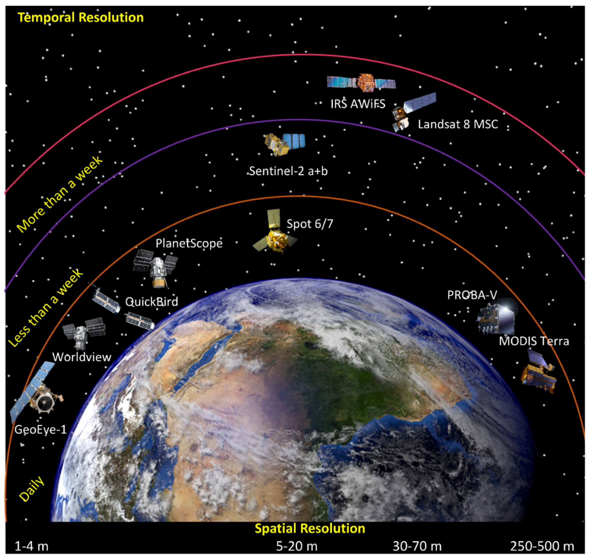

2 Week 1 Introduction to Remote Sensing
2.1 Summary
2.1.1 What is remote sensing? Sensors + EM spectrum
2.1.1.1 Definition & scope
Remote sensing is the acquisition of information about the Earth’s surface from a distance, using sensors that do not come into direct contact with the objects being observed. In this module, remote sensing is closely linked to Earth Observation (EO), which emphasises using satellite and airborne data to monitor environmental and urban processes over time.
2.1.1.2 Passive vs active sensors
Passive sensors record natural electromagnetic radiation, usually solar radiation reflected by the surface or thermal emission from the Earth (e.g. optical cameras, multispectral scanners). Passive systems are strongly affected by atmospheric conditions such as clouds, haze and scattering, which can block or distort the signal in certain wavelength regions. Active sensors transmit their own energy (for example radar, SAR or LiDAR) and then measure the returned signal, which allows them to operate at night and to partially penetrate clouds, smoke or vegetation canopies. In practice, passive optical data are often used for land-cover mapping, vegetation monitoring and urban form, while active systems such as SAR are more suitable for surface deformation, structure, moisture and observations in persistently cloudy regions. ###Electromagnetic spectrum & atmospheric windows Different parts of the electromagnetic spectrum (visible, near-infrared, short-wave infrared, thermal infrared, microwave) carry different types of information about surface materials and processes. The atmosphere is only transparent in certain wavelength ranges known as atmospheric or optical windows, and remote-sensing instruments are designed so that their bands fall inside these windows. In Week 1 we mainly worked with optical passive sensors, using Sentinel-2 and Landsat Level-2 products that provide surface reflectance in visible, NIR and SWIR bands.
2.1.2 Four resolutions of remote sensing data

2.1.2.1 Spatial resolution
Spatial resolution describes the ground area represented by one pixel, for example 10 m × 10 m for Sentinel-2 or 30 m × 30 m for Landsat 8/9. Higher spatial resolution reveals finer detail but increases data volume and often comes with longer revisit times or smaller swath widths, so there is a trade-off between detail and temporal coverage.
2.1.2.2 Spectral resolution
Spectral resolution refers to how finely a sensor splits the spectrum into bands, from broad RGB channels to multi-spectral and hyper-spectral systems with many narrow bands. Different materials have distinctive spectral signatures, and higher spectral resolution improves our ability to discriminate between, for example, vegetation types, soil, water and man-made surfaces.
2.1.2.3 Temporal resolution
Temporal resolution is the revisit time, i.e. how often a sensor can acquire imagery over the same location (around 5 days for Sentinel-2A/B combined, and 16 days for Landsat 8/9). There is a fundamental trade-off between spatial and temporal resolution: sensors that image large areas frequently tend to have coarser pixels, while very high-resolution systems usually cover smaller areas or revisit less often.
2.1.2.4 Radiometric resolution
Radiometric resolution is the number of digital levels used to record brightness, for example 8-bit data (0–255) versus 12-bit data (0–4095) in Sentinel-2. A higher radiometric resolution allows the sensor to detect smaller differences in reflectance, which can be important for subtle gradients in vegetation condition, water quality or urban materials.
2.2 Appication
2.2.1 Practical applications of Sentinel-2
Sentinel-2 has been widely applied in practical environmental monitoring because it achieves an effective balance between spatial, spectral, and temporal resolution. Segarra et al. (2020) note that Sentinel-2 can support crop classification, yield prediction, fertiliser planning, and irrigation management, while also helping to detect plant stress, chlorophyll content, and nitrogen status. As illustrated in the agricultural example, the combination of visible, near-infrared (NIR), red-edge, and shortwave infrared (SWIR) bands allows surface reflectance data to be translated into meaningful information on vegetation condition, leaf structure, and moisture content, thereby supporting management decisions in practice.
Figure 2 further shows that Sentinel-2 occupies an important middle ground between coarse but high-frequency sensors such as MODIS and finer-resolution systems that are often commercial, such as Planet or WorldView. Its 10–20 m bands are detailed enough for field-scale analysis and land-cover assessment, while still providing regular temporal coverage and free global access. This combination helps explain why Sentinel-2 has been widely used in land cover and land use mapping, including the monitoring of crops, forests, urban areas, and water bodies, as well as in flood and wildfire assessment. In addition, its VNIR and SWIR bands can be used to produce band-ratio products for geological mapping, including ferric and ferrous iron, iron oxide minerals, and ferric oxides, with good correspondence to existing ASTER-derived products (van der Meer et al., 2014). This suggests that Sentinel-2 is valuable not only for environmental and agricultural applications, but also for supporting mineralogical and lithological interpretation.

2.2.2 Why these four types of resolution matter in practice
The practical value of Sentinel-2 in agriculture, land cover mapping, and geology is closely linked to its four types of resolution. Its spatial resolution (10–20 m) is sufficiently detailed to detect field parcels, vegetation patches, and other meso-scale surface features. Its spectral resolution, including red-edge, near-infrared, and shortwave infrared bands, enables the differentiation of vegetation condition, moisture content, and surface materials, which underpins its applications in crop monitoring and mineral mapping. Its temporal resolution supports repeated observations of seasonal dynamics and rapidly changing phenomena, while its radiometric resolution allows subtle differences in reflectance to be captured, improving the detection of vegetation stress and environmental variability.
2.3 Reflection
This week provided a structured and effective introduction to remote sensing. Prior to this, satellite imagery was largely perceived as a visual product, similar to an advanced map or aerial photograph. However, the combination of theoretical and practical components has clarified that the essence of remote sensing lies in measuring and interpreting reflected energy across different regions of the electromagnetic spectrum. Concepts such as spectral characteristics, atmospheric windows, and the four types of resolution have therefore shifted from abstract technical terms to core principles underpinning how remote sensing operates.
That said, there remains a clear gap between conceptual understanding and being able to confidently interpret how these processes function in practice. Linking theory to a concrete example, such as Sentinel-2, has helped to bridge this gap. Observing its applications in agriculture, land cover mapping, and even geological analysis has made the theory less abstract and more accessible. Sentinel-2 is not necessarily the optimal sensor in every context, but its strength appears to lie in achieving a pragmatic balance between spatial, spectral, and temporal resolution. Its red-edge, near-infrared (NIR), and shortwave infrared (SWIR) bands make it particularly effective for monitoring vegetation condition and surface cover variation, while its frequent revisit cycle enables repeated observation. At the same time, understanding its limitations, including cloud interference, the absence of thermal infrared bands, and differences in native band resolutions, highlights that all datasets involve trade-offs, and that sensor choice must always be aligned with the research question.
The practical component was more challenging than expected. While working with the software, I encountered a number of small technical issues, which emphasised that successful analysis and accurate interpretation require theoretical understanding and practical skills to develop in parallel, rather than simply following procedural steps. Looking ahead, I am particularly interested in learning how to use Google Earth Engine (GEE) to conduct more efficient satellite-based urban environmental analysis. Compared to local desktop processing, GEE has the potential to reduce the burden of downloading, storing, and managing large datasets, while also being better suited for handling long-term time series. This represents not only a technical advantage, but also an opportunity to move from single-image interpretation towards analysing dynamic changes over time.
I am also keen to apply the skills developed this week, particularly the combined use of Sentinel and Landsat data, to research areas of greater personal interest, such as urban climate vulnerability, the urban heat island effect, and extreme heat events. The long-term, continuous observations provided by Landsat, when combined with the higher spatial and temporal resolution of Sentinel-2, offer strong potential for understanding both long-term urban change and more recent spatial patterns.